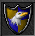
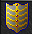
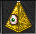

Fallen gods: Plains of Gold
Quests:
Side quests:
Access to Plains of Gold
The best way to come here is from Fallen gods checkpoint 1. Follow the path to the North-west where is Xapter protecting the lever to the deeper into Fallen gods. Go past the Xapter and go South on a narrow path. There will eventually come pitfall, head there.
At the next place, you need to pull 2 levers in order to continue. First is straight up from the stairs, go ladders up to the top. Other Lever is to the East stairs up with loads of Scyllas, some arctoses and helarctoses.
After pulling those 2 levers, head West and you’re at the plains area.

Silver brooch quest
At plains, go to the city and South. You’ll see some fake chests all around the city, 1 is real here, marked on the map. Worst monster here is Osiris.
Butterfly conservation kit 2
At plains city, go North wall and follow the Path to the West at the end. The chest is at middle South.

Botanist’s container 2
Requirements: Scythe/machete/rune of almighty abilities
At plains, go out from the city and head West hills with behemoths, uglos and beheloniano brutals and follow the path to the chest at West small house.
Ice stalagmite
Requirements: Scythe/machete/rune of almighty abilities
Now you need to pull 2 levers in order to continue. First one is hidden under 2 crates North-east of the city walls in a small building. There’s also a couple of orshabaals. The next one is at the mountain up North with surphyres and lots of Asthars. After pulling those, you can grab the checkpoint to the East, then head North and go ladders up.

Go past the draconises and Evil Limp and go down with hybrids. Go North-East past the Xapter, use scythe or other item to cut down the grass and go downstairs. There is no way back after this. Go full around the circle, at the end is Arm of Doom guarding the teleport. Go in and follow the path as far as you get to the desert. You’ll first go across a bridge and face the Donkey rider.
From here, go West and then you’ll find downstairs at the second desert area. There’s some pharaohs such as dipthras and Omruc. Follow the path to South-West and go downstairs by the mad cow. The chest is under protection of 2 red rippers, 2 hybrids and 2 helarctoses.
Tail of darkness & Stone herb
Requirements: Scythe/machete/rune of almighty abilities
From Ice stalagmite quest, go West over the tower to the other side with Gremlins and other mobs. Get past the holy knights and loads of other easy monsters then head North from the first corner to go for Tail of darkness quest.
Head back and keep going West as far as you find small town with Xarptorius. Stone herb quest is at the middle house up to the ladders.

Golden raptor's amulet
If you have followed Ice stalagmite quest, you know how to get to this point. Go to the West mountains with chinese pandas and cyclips and go South stairs. There’s hole to the underground which leads to loads of Uglos and Behemoths. Follow the path to the deepest parts of the dungeon and go full South. You’ll face Xarptoriuses, helarctos malayanas, cyclip gods and some other strong monsters.
Upgrade Rose, Tusk or Honour shield to Cyclip shield
Recommended level: 1200; duo 900, trio 800
Requirements: Scythe/machete/rune of almighty abilities
Rose, Tusk or Honour shield
Eagle shield
Blessed shield
 Tempest shield
Tempest shield
Illuminati
The best way to come here is from Fallen gods checkpoint 1. Follow the path to the North-west where is Xapter protecting the lever to the deeper into Fallen gods. Go past the Xapter and go South on a narrow path. There will eventually come pitfall, head there.
At the next place, you need to pull 2 levers in order to continue. First is straight up from the stairs, go ladders up to the top. Other Lever is to the East stairs up with loads of Scyllas, some arctoses and helarctoses.
After pulling those 2 levers, head West and you’re at the plains area.
Now you need to pull 2 levers in order to continue. First one is hidden under 2 crates North-east of the city walls in a small building. There’s also a couple of orshabaals. The next one is at the mountain up North with surphyres and lots of Asthars. After pulling those, you can grab the checkpoint to the East, then head North and go ladders up.
Go past the draconises and Evil Limp and go down with hybrids. Go North-East past the Xapter, use scythe or other item to cut down the grass and go downstairs. There is no way back after this. Go full around the circle, at the end is Arm of Doom guarding the teleport.

Go in and follow the path as far as you get to the desert. You’ll first go across a bridge and face the Donkey rider.
After getting out of the mountains you find yourself surrounded by different kinds of pharaohs. Head West past the city, stairs up and go over the bridge to the other side. Keep following the path to the North-West. You’ll find a single Cyclip god on your way to the quest area. Pull the lever in order to get upstairs with Donkey rider and lots of Angels of death. Here you can now upgrade your shields to Cyclip shield.

Dark overlord set to Cyclip set upgrade
Recommended level: 1200; duo 900, trio 800
Requirements: Scythe/machete/rune of almighty abilities
Helarctos set
 Silver brooch
Silver brooch
Stone herb
 Ice Stalagmite
Ice Stalagmite
 Butterfly conservation kit2
Butterfly conservation kit2
 Botanist container 2
Botanist container 2
 Morgaroth's heart
Morgaroth's heart
Giant eye
This quest requires some time if you are lower level than 1200 as there are loads of monsters, some harder and alot easier. The worst monsters will be Cyclip gods and Alpha doradus.
The items you for the quest you’ll get along the way, Morgaroth’s heart you can loot from monsters such as Morgaroth, Surphyre and Helarctos. Giant eye you can loot from Giants and Hypergiants.
The best way to come here is from Fallen gods checkpoint 1. Follow the path to the North-west where is Xapter protecting the lever to the deeper into Fallen gods. Go past the Xapter and go South on a narrow path. There will eventually come pitfall, head there.
At the next place, you need to pull 2 levers in order to continue. First is straight up from the stairs, go ladders up to the top. Other Lever is to the East stairs up with loads of Scyllas, some arctoses and helarctoses.
After pulling those 2 levers, head West and you’re at the plains area.
Now you need to pull 2 levers in order to continue. First one is hidden under 2 crates North-east of the city walls in a small building. There’s also a couple of orshabaals. The next one is at the mountain up North with surphyres and lots of Asthars. After pulling those, you can grab the checkpoint to the East, then head North and go ladders up.
Go past the draconises and Evil Limp and go down with hybrids. Go North-East past the Xapter, use scythe or other item to cut down the grass and go downstairs. There is no way back after this. Go full around the circle, at the end is Arm of Doom guarding the teleport.
Go in and follow the path as far as you get to the desert. You’ll first go across a bridge and face the Donkey rider.
Now you need to pull 2 levers: 1st at South and 2nd West mountain. It doesn’t matter which you pull first, let’s go first to South. Go upstairs, then down and then a hidden passage to the underground. Head East and go downstairs, there’s no way back; 2 helarctos and 2 hypergiants. Hop into the teleport, there’s 1 red ripper and a lever. PULL THE LEVER BEFORE GOING DOWNSTAIRS!

Now go back upstairs and go the mountain on West side of the area. Go inside the mountains and find the lever.(Included in the picture above)
Then you can head to the quest area. Go downstairs at the small house like place and head East and then straight North downstairs. Follow the path as long as you find yourself at with yellow energy field way to go up and down. Up here is 3 helarctos and 1 helarctos malayana, no need to kill if don’t want to. East is Arm of Doom, South is Dark overlord. West is Cyclip god and Alpha Doradus is blocking the quest stairs. Get past Alpha and you’re good to upgrade your set.